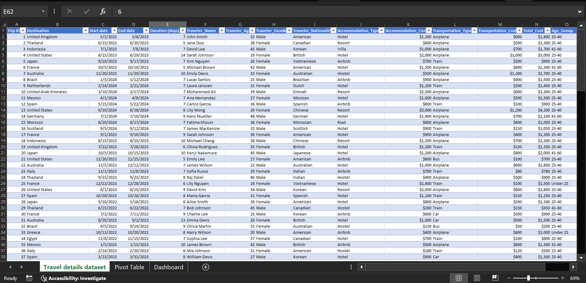
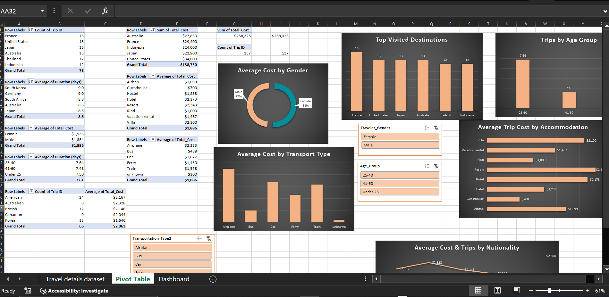
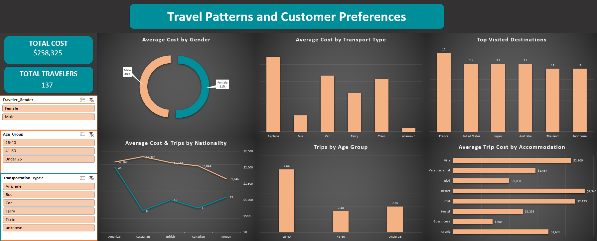

Project Details
Goal
Our goal is to analyze traveler behavior, spending patterns, and trip trends to uncover insights that can help a travel agency optimize offers, destinations, and marketing focus.
Download from GitHub!Setup
To start the project, data cleaning was performed to ensure accurate analysis. This included the removal of blanks to avoid errors in formulas and make sorting and filtering easier. Furthermore, the data was updated to be more interpretable, such as cleaning the Transportation_Type column by replacing “Subway” and “Plane” with “Train” and “Airplane” as the latter was also present in the data. Age_Group was also created to facilitate better visualization of the data. Additionally, I ensured there was no missing data and that each field had the correct data type.
Fig 1. This image shows the dataset after it was cleaned.
These steps were essential to ensure that the data was properly formatted for analysis and would yield accurate results. We initially started with 140 records and now we have 137.
Analysis
Now that we have clean data, we can perform exploratory data analysis to gain insights and patterns in the data.
Business Questions:
- Which destinations are the most visited?
- What is the average total cost of trips?
- Which destinations, transport types, or accommodation types are the most expensive?
- Are longer trips associated with certain destinations, accommodations, or age groups?
- Which transportation types are most commonly used?
- Which accommodation types are preferred?
- What is the total revenue generated by all trips?
- Which destinations or traveler segments generate the most revenue?
- Do spending habits differ by gender, age group, or nationality?
Answering these business questions helps the travel agency increase revenue, improve customer targeting, and enhance travel experiences through informed, data-backed strategies.
Data Exploration
We will start by segmenting the travelers based on their age group, gender, destinations, accommodation, etc.
I used the customer data to create pivot tables that grouped the customers based on different criteria. Using these groups, I created charts that show key insights. Additionally, differnt functions were used to perform calculations.
Fig 2. This image shows the different pivot tables and charts.
To make it easy to view all this information at once, I created a dashboard that displays all the charts. I also added a slicer to the dashboard, which allows users to filter the data based on different criteria. This makes it easy to identify the travel segments that influence spending patterns, destination preferences, and overall travel trends.
Fig 3. This image shows the Travel Patterns and Customer Preferences Dashboard.
Key Findings
Using the dashboard, we were able to determine the following insights:
- Most Visited Destinations: The top travel destinations based on trip frequency, highlighting where demand is highest.
- Average Trip Cost: The typical spending per trip across all travelers, showing how travel budgets vary by destination and accommodation type.
- Most Expensive Options: Destinations, transportation modes, and accommodation types with the highest average costs, helping identify premium travel segments.
- Trip Duration Trends: Relationships between trip length and factors like destination, accommodation, and traveler age, showing who tends to travel longer.
- Demographic Spending Patterns: Differences in total and average spending across gender, age groups, and nationalities, revealing high-value customer segments.
- Transportation Preferences: The most commonly used transportation types, helping understand mobility trends and potential travel partnerships.
- Accommodation Preferences: Popular accommodation types among travelers, useful for tailoring package recommendations.
- Revenue Analysis: Total revenue generated from all trips, giving an overview of the business’s total earnings from travel activities.
- Top-Performing Segments: The destinations, traveler demographics, and travel combinations that generate the most revenue, supporting targeted marketing and investment decisions.
Recommendations
Based on these findings, the business can implement the following actionable steps to improve sales:
- Invest more marketing efforts and travel packages around the most frequently visited and high-revenue destinations to maximize profit.
- Review the cost structure of premium destinations, transport modes, and accommodations to offer competitive yet profitable pricing.
- Create tailored campaigns for traveler groups (by nationality, age, or gender) that spend the most or take longer trips.
- For traveler segments with lower spending, design affordable travel bundles emphasizing value-for-money accommodations or transport modes.
- Collaborate with popular transportation and accommodation providers to offer discounts and exclusive deals for recurring customers.
- Provide incentives such as extended-stay discounts or add-on experiences for travelers who prefer longer trips.
- Use traveler demographic insights to recommend destinations or packages that align with their past preferences and spending behavior.
- Identify destinations or customer groups with low activity or revenue and redesign marketing strategies to boost engagement.
In conclusion, the analysis highlights key travel trends, spending behaviors, and high-value traveler segments. By focusing on popular destinations, optimizing pricing, and tailoring travel packages, the agency can enhance customer satisfaction and drive greater revenue growth.